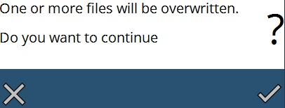

Fájlkezelés
Importálás
Fájlok importálásához közvetlenül a képernyő jobb felső sarkában található Importál gombot használhatja. Lehetővé teszi az importálást minimális számú kattintással.

Fájlkezelő
A fájlokkal kapcsolatos minden más művelet a Fájlkezelő opcióval végezhető (a képernyő jobb oldalán elérhető).
A következő funkciók állnak rendelkezésre a fájlkezelési műveletekben:
-
Átnevezés : Ezzel a paranccsal megváltoztathatja a kiválasztott program nevét. Az új nevet beírhatja a megjelenő párbeszédablakban.
-
Törlés: Ezzel a kapcsolóval törölheti a kiválasztott programot.
-
Klónozás : Ezzel a paranccsal pontos másolatot készíthet a kiválasztott program(ok)ról. Válasszon ki egy vagy több programot, majd nyomja meg ezt a gombot a kiválasztott program(ok) másolatának elkészítéséhez. Ha egynél több programot klónoz, akkor megjelenik a Fájlok klónozása párbeszédablak, amely rákérdez, hogy szeretné-e klónozni a kiválasztott számú fájlt. Az OK gomb megnyomása a fájlokat klónozottként jelöli meg. Általában a klónozott fájl neve egy számot tartalmaz az alkatrész neve után, hullámvonallal elválasztva (pl. ha egy P5 nevű alkatrészt klónoz, akkor a klónozott alkatrész neve be P5~1 lesz.
-
Exportálás : Ha megnyomja ezt a parancsot, megjelenik a Fájl exportálása párbeszédablak, amelyben kiválaszthatja a kijelölt fájl(ok) exportálásának helyét.
-
Importálás : Ezzel a funkcióval program(ok) importálhatók. Ez a gomb megnyitja a Fájlok importálása párbeszédablakot, amelyben kiválaszthat egy vagy több programot vagy közvetlen programfájlt az importáláshoz. A fájlok kiválasztása után nyomja meg az OK gombot a párbeszédablakban a fájl(ok) importálásához. Ha az importálni kívánt fájl(ok) neve már létezik, akkor az alábbi ábrán látható figyelmeztető üzenet jelenik meg, feltéve a kérdést, hogy le kell-e cserélni a meglévő fájl(ok)at. //Ez az opció a fájlkezelő menüjén kívül található.

-
Szervezés : A programok fejlécének kiválasztásával legfelül megnyílik ez az opció. A gomb megnyomásakor az alábbi ábrán látható párbeszédablak jelenik meg.

A szerkesztési oldal a Programok mappa összes programját megjeleníti. Ebben a mappában mappákat hozhat létre és rendszerezheti az adatait. Új mappákat hozhat létre az Új mappa paranccsal. Ezáltal létrejön egy új mappa a Programok mappán belül. Balra látható a Mappa kiválasztása rész, amely a könyvtárszerkezetet mutatja. Kiválaszthat egy mappát a fából, a szerkesztési oldalon pedig megjelenik a kiválasztott mappa tartalma.
A mappában lévő fájlokat a Rendezés következők szerint szakaszban megadott lehetőségek segítségével is rendezheti.
A név szerinti növekvő rendezéshez válassza a Név [A..Z], a név szerinti csökkenő rendezéshez pedig a Név [Z..A] lehetőséget.
A Legújabb legelöl a közelmúltban létrehozott összes programot mutatja, a Legrégebbi legelöl pedig a programokat a létrehozás dátuma szerinti növekvő sorrendben jeleníti meg.
A Miniatűrök megjelenítése funkcióval be- vagy kikapcsolhatja a szerkesztési oldalon lévő programok miniatűrjeinek megjelenítését. Alkönyvtárak eltávolításához használja a Törlés gombot.
| Csak üres alkönyvtárat lehet törölni. |
Nyomja meg a Kész gombot a módosítások érvényesítéséhez és a kilépéshez.